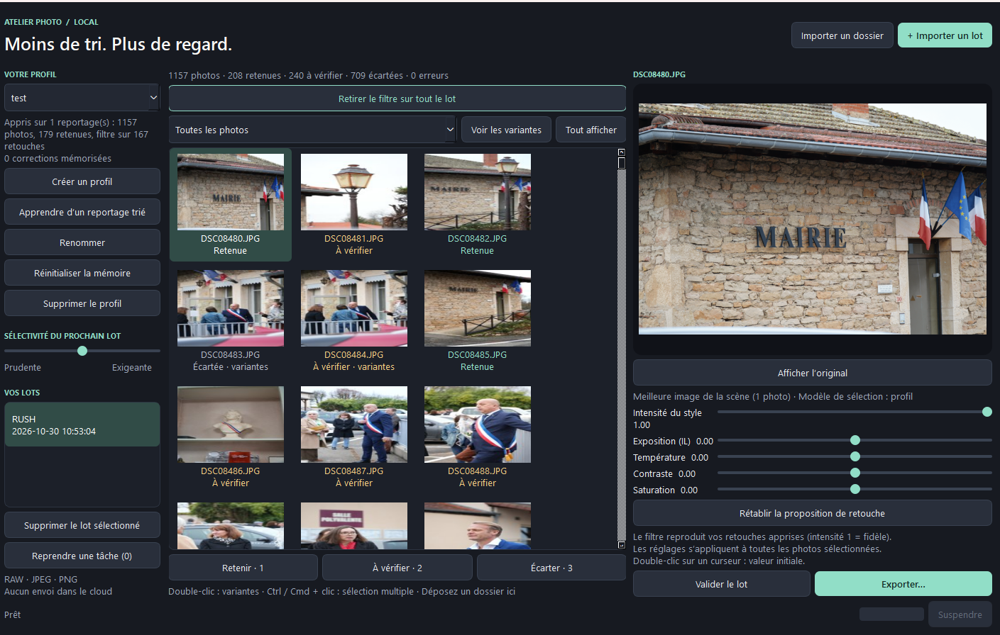

Projet personnel · Octobre 2026
AtelierPhoto
Une application pensée pour trier les photos et proposer une première retouche en apprenant les préférences de chaque utilisateur, avec des profils distincts et un traitement entièrement local.
Voir le projet sur GitHub
Les questions d’un ami photographe
Un ami photographe me posait beaucoup de questions sur les logiciels et l’IA. Il avait entendu parler d’outils capables de trier les photos avec l’IA, mais trouvait leurs prix élevés. Lequel choisir ? Et pouvait-on faire quelque chose nous-mêmes ?
Je venais de prendre la version d’essai de ChatGPT et j’avais déjà bien exploré l’IA en local. J’ai donc commencé mes recherches : offres du marché, logiciels, modèles d’IA, prix et fonctionnement.
Utiliser les créneaux disponibles
Dans les offres que j’avais repérées, je retenais un budget d’environ 40 € pour quelque chose qui semblait convenable de l’extérieur. Dans mon calcul, cela représentait deux mois d’abonnement à une IA : pouvais-je faire mieux en utilisant ses créneaux disponibles ?
J’ai tendance à épuiser mon forfait à 20 €, mais lorsque de gros blocs de code sont terminés, les tests m’occupent un moment. J’ai choisi ChatGPT Astra 6 parce que mon Claude était déjà très sollicité. Dans mon cas, le quota de tokens annoncé comme hebdomadaire sur ChatGPT se réinitialisait tous les trois jours.
Apprendre les préférences de chaque profil
Le but d’AtelierPhoto est de trier des photos et d’appliquer un premier filtre. Chaque profil doit recevoir des exemples de travail déjà effectué par l’utilisateur : les photos du lot initial, ou « rush », et celles qu’il a finalement conservées.
Ces références doivent permettre au logiciel de déduire les préférences de l’utilisateur : gérer les doublons, tenir compte du flou et proposer une première retouche qui se rapproche de ses choix.
L’application doit aussi apprendre au fil de l’usage. Les préférences et les apprentissages sont rattachés à chaque profil : changer de profil revient donc à utiliser d’autres critères de sélection et de retouche.
Comparer CLIP et DINOv3
Le projet a d’abord été réalisé avec CLIP. J’ai ensuite mené plusieurs benchmarks avec Astra pour comparer différents modèles, procédés et tailles, afin de voir ce qui convenait le mieux au projet.
Dans mes essais, avec peu de données — environ 150 photos conservées issues des rushs — CLIP donnait les meilleurs résultats. Avec davantage de données, DINOv3 semblait plus prometteur, et il était surtout beaucoup plus rapide dans les configurations comparées.
Prévoir Windows et macOS
La compatibilité macOS était un prérequis : mon ami est plutôt du côté de la pomme. L’application devait donc pouvoir fonctionner sur Windows comme sur macOS.
Comme je ne possède pas de Mac, j’ai sollicité un autre ami, développeur, pour m’aider à préparer la version Mac et son fichier .command. Pour le reste, il a fallu faire confiance à l’IA, sans pouvoir tout vérifier moi-même sur cette plateforme.
Tout garder en local
L’autre contrainte était essentielle pour moi : aucun appel sortant. Le tri, les retouches et l’apprentissage des préférences doivent se faire localement, sans envoyer les photos dans le cloud.